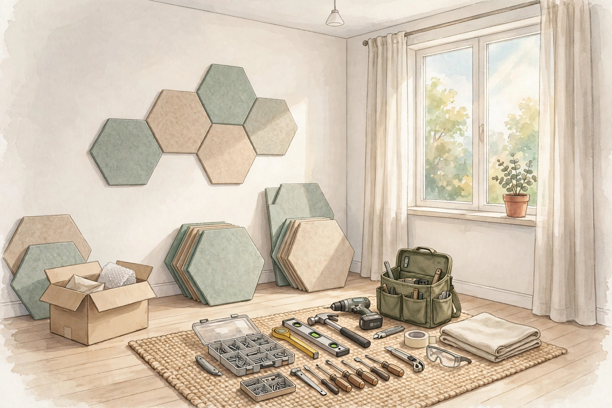

この記事の要点
- 賃貸の部屋で、防音のための工事をしたいとき、どう考えればいいのでしょうか？
- 賃貸の部屋では、壁や床、天井に手を加える工事は、原則として、事前に管理会社や、大家さんの確認が必要です。
- 賃貸で取り組みやすい工事は、取り外しができるものが中心です。
⏱ 急いでいる人へ ― 今夜やること3つ
- 契約書と重要事項説明書で、原状回復と工事の可否の条項を確認する
- まず「置く・敷く」だけの、原状回復できる方法から検討する
- 管理会社へ確認する前に、工事の内容と戻し方をメモにまとめる
📖 目次
💡 まず知っておきたいこと：賃貸では、工事の前に、確認が必要です
賃貸の部屋では、壁や床、天井に手を加える工事は、原則として、事前に管理会社や、大家さんの確認が必要です。確認を取らずに工事をすると、原状回復の費用がかかる場合があります。まずは、どのような工事をしたいのかを、具体的に伝えて、確認を取ることが大切です。工事の内容によっては、認められない場合もあります。
賃貸の部屋は、退去するときに入居したときの状態に戻すことが前提です。「工事そのものが禁止」というより、「元に戻せるかどうか」と「事前に確認を取ったかどうか」が、判断の分かれ目になることが多いです。
確認を取るときは、「防音工事をしていいですか」と聞くよりも、「何を、どこに、どう取り付けるか」と「退去時にどう元に戻すか」まで具体的に伝えるほうが、話が進みやすくなります。メールなど記録が残る形で残しておくと、後からの認識の違いを減らしやすくなります。
🏗️ できる工事の考え方
賃貸で取り組みやすい工事は、取り外しができるものが中心です。吸音材を、壁に貼る場合でも、壁を傷つけない方法で取り付ける、という工夫があります。床に、防音マットや、カーペットを敷く方法は、取り外しがしやすい場合があります。二重窓や、内窓の設置は、工事が必要な場合が多く、管理会社への確認が、特に大切です。どの工事も、音を完全になくすものではありません。
原状回復できるかどうかで考える
方法を選ぶときの目安は、「退去するときに、自分で元に戻せるか」です。大まかには、次のように分けられます。
- 置く・敷く・立てるだけのもの ― 防音マットやカーペットを敷く、吸音パネルを立てかける、突っ張り式のパーテーションを置くなど。原状回復がしやすく、賃貸でも取り組みやすい部類です
- 取り付け方に工夫が要るもの ― 吸音材を壁に付ける場合など。剥がせるタイプのテープや、柱材を立てて取り付ける方法もありますが、跡が残る可能性はゼロではありません。心配な場合は、事前に確認を取っておくと安心です
- 原則として許可が要るもの ― 壁や床、天井へのビス留めや穴開け、床材の貼り付け、内窓・二重窓の設置、ドアや窓の交換など。建物そのものに手を加える内容は、必ず事前の確認が必要です
場所ごとの具体策
- 床 ― 下の階への足音が気になる場合は、厚手の防音マットやカーペットを敷く方法が取り組みやすいです。クッション性のある素材を重ねると歩行の衝撃を和らげやすくなりますが、重い衝撃音を完全には止められません
- 壁 ― 隣の部屋との間の壁には、本棚などの家具を置く方法があります。吸音材は、部屋の中の音の反響を抑える材料で、壁を通る音を止める遮音とは役割が違います。反響が減ると、部屋の中は静かに感じやすくなりますが、隣への音の伝わり方が大きく変わるとは限りません
- 窓 ― 窓は、音の出入りが大きい場所のひとつです。内窓は、窓を二重にすることで音を伝えにくくする方法ですが、設置には工事と許可が必要です。簡易的には、厚手のカーテンや隙間テープで隙間を減らす方法もありますが、効果は限定的な目安です
費用の考え方
費用は、工事の内容や、部屋の広さ、使う材料によって、大きく違います。このページでは、具体的な金額は、示していません。まずは、複数の業者から、見積もりを取る、という進め方が無難です。見積もりを取るときは、工事の内容と、原状回復の条件、保証の内容について、具体的に確認してみてください。安い工事が、必ずしも、効果の高い工事とは限りません。
あくまで費用感の目安として、敷くタイプの防音マットやカーペットは、材料費で1畳あたり数千円から、吸音パネルは1枚あたり数千円程度からが一つの目安です。内窓や二重窓は、1か所あたり数万円から、大きさによっては十万円を超えることもある規模になりやすいです。いずれも、材料や広さ、業者、地域によって大きく変わるため、実際の金額は見積もりで確認してください。
予算は、工事費だけでなく、退去時の撤去や原状回復の費用も含めた全体で考えることが大切です。見積もりの段階で、撤去の条件も確認しておくと安心です。
⚠️ 原状回復の注意点
原状回復とは、退去するときに、部屋を、入居したときの状態に戻すことです。工事をした場合は、撤去の費用や、壁や床の修繕の費用が、かかる場合があります。工事の前に、原状回復の条件について、確認しておくことが大切です。契約書や、重要事項説明書に、原状回復についての決まりが、書かれている場合があります。確認してみてください。
退去時に慌てないためには、工事前の準備が助けになります。工事の前に壁や床の状態を写真で記録しておくと、入居時からあった傷との区別がつきやすくなります。許可のやり取りも、メールなどで残しておくと安心です。
退去のときは、立会いの場で、工事した部分をどう扱うかを一緒に確認します。原状回復の範囲や費用の負担は、契約の内容によって違うため、このページでは判断できません。考え方の参考として、国土交通省から「原状回復をめぐるトラブルとガイドライン」が公表されています。
🔁 うまくいかないときの次の一手
許可が下りなかったり、工事をしても思ったほど変わらなかったりすることもあります。そのときの切り替え先です。
- 置き型・敷き型に切り替える ― 許可が要る工事が難しい場合は、許可が要らない範囲の方法（敷く、置く、立てる）だけで組み立て直します。小さな工夫の積み重ねでも、感じ方が変わることがあります
- 家具の配置を変える ― 壁際に本棚やタンスを置くと、部屋の中の音の反響や、伝わり方が変わることがあります。お金がかからず、すぐに戻せる方法です
- 音の出る時間帯を工夫する ― 洗濯機や掃除機など、使う時間を選びやすい家電は、夜遅い時間帯を避けるだけでも、周りへの伝わり方が変わります
- 隣の音が気になる場合は、マスキング音も選択肢です ― 気になる音に近い音を控えめに流し、音を目立たなくする方法です（マスキング音の仕組み）。ただし、自分の部屋で流しても、自分の音が隣に漏れる量が減るわけではありません
- それでも困る場合は、記録をつけて相談する ― 音の記録をつけておくと、管理会社へ落ち着いて相談しやすくなります（騒音の記録シート、苦情が来たときの対応）
❓ よくある質問
- Q. 内窓の設置を断られました。他に方法はありますか？
- A. 厚手のカーテンや隙間テープなど、取り外しできる方法で窓やドアの隙間を減らす工夫があります。効果は内窓より限定的な目安です。それでも気になる場合は、マスキング音など別の対策との組み合わせもあります。
- Q. 退去のときに、高額な原状回復の費用を請求されないか心配です
- A. 費用の負担の範囲は、契約の内容によって違うため、このサイトでは判断できません。工事の前に、許可の記録と部屋の写真を残しておくことが、後の確認の助けになります。不安が大きい場合は、専門家や消費生活センターなどへの相談をご検討ください。
- Q. 防音の工事をすれば、音は完全になくなりますか？
- A. 完全になくすことは難しいのが実情です。建物の構造を伝わる音は、部屋の中の工事だけでは止めきれない場合があります。「どの音を、どのくらい目立たなくしたいか」を具体的にして、見積もりのときに業者へ確認してみてください。
⚠️ 注意
このページの内容は、法律の判断ではありません。賃貸の工事や、原状回復については、契約内容や、法律の判断が必要な場合があります。管理会社や、専門家への相談をご検討ください。